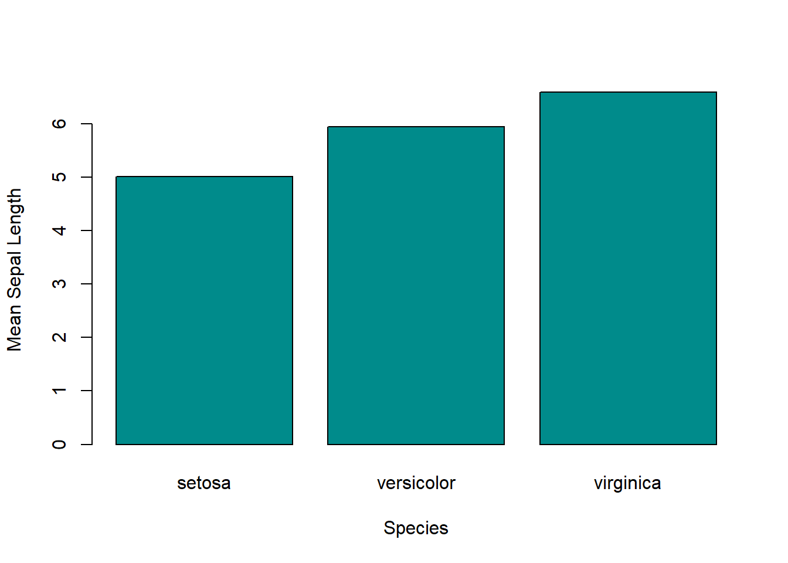

9 Functionals
Functionals are functions that take a function as an input and output a value. They are useful for casting a function over all columns in a dataset or elements in a list.
This chapter will demonstrate a select handful of functionals–see ?lapply for more information.
9.1 lapply()
The lapply() function (“list apply”) casts a function over an object, such as a dataset or list, and outputs a list. This function is useful when you want to iterate over disparate elements and output similarly disparate results.
Below is a simple example of calculating the means for each column in the mtcars dataset. Note how the elements are not stored in a one- nor two-dimensional format like a vector or data frame.
# Means for each column in mtcars.
lapply(mtcars, mean)## $mpg
## [1] 20.09062
##
## $cyl
## [1] 6.1875
##
## $disp
## [1] 230.7219
##
## $hp
## [1] 146.6875
##
## $drat
## [1] 3.596563
##
## $wt
## [1] 3.21725
##
## $qsec
## [1] 17.84875
##
## $vs
## [1] 0.4375
##
## $am
## [1] 0.40625
##
## $gear
## [1] 3.6875
##
## $carb
## [1] 2.8125For a more complex example, we can use lapply() to estimate several models based on different subsets of the same dataset. First, we’ll use split() to divide mtcars into smaller subsets.
# Split mtcars by gear
# i.e. each subset is based on a different number of gears.
subset_list <- split(mtcars, mtcars$gear)
subset_list## $`3`
## mpg cyl disp hp drat wt qsec vs am gear carb
## Hornet 4 Drive 21.4 6 258.0 110 3.08 3.215 19.44 1 0 3 1
## Hornet Sportabout 18.7 8 360.0 175 3.15 3.440 17.02 0 0 3 2
## Valiant 18.1 6 225.0 105 2.76 3.460 20.22 1 0 3 1
## Duster 360 14.3 8 360.0 245 3.21 3.570 15.84 0 0 3 4
## Merc 450SE 16.4 8 275.8 180 3.07 4.070 17.40 0 0 3 3
## Merc 450SL 17.3 8 275.8 180 3.07 3.730 17.60 0 0 3 3
## Merc 450SLC 15.2 8 275.8 180 3.07 3.780 18.00 0 0 3 3
## Cadillac Fleetwood 10.4 8 472.0 205 2.93 5.250 17.98 0 0 3 4
## Lincoln Continental 10.4 8 460.0 215 3.00 5.424 17.82 0 0 3 4
## Chrysler Imperial 14.7 8 440.0 230 3.23 5.345 17.42 0 0 3 4
## Toyota Corona 21.5 4 120.1 97 3.70 2.465 20.01 1 0 3 1
## Dodge Challenger 15.5 8 318.0 150 2.76 3.520 16.87 0 0 3 2
## AMC Javelin 15.2 8 304.0 150 3.15 3.435 17.30 0 0 3 2
## Camaro Z28 13.3 8 350.0 245 3.73 3.840 15.41 0 0 3 4
## Pontiac Firebird 19.2 8 400.0 175 3.08 3.845 17.05 0 0 3 2
##
## $`4`
## mpg cyl disp hp drat wt qsec vs am gear carb
## Mazda RX4 21.0 6 160.0 110 3.90 2.620 16.46 0 1 4 4
## Mazda RX4 Wag 21.0 6 160.0 110 3.90 2.875 17.02 0 1 4 4
## Datsun 710 22.8 4 108.0 93 3.85 2.320 18.61 1 1 4 1
## Merc 240D 24.4 4 146.7 62 3.69 3.190 20.00 1 0 4 2
## Merc 230 22.8 4 140.8 95 3.92 3.150 22.90 1 0 4 2
## Merc 280 19.2 6 167.6 123 3.92 3.440 18.30 1 0 4 4
## Merc 280C 17.8 6 167.6 123 3.92 3.440 18.90 1 0 4 4
## Fiat 128 32.4 4 78.7 66 4.08 2.200 19.47 1 1 4 1
## Honda Civic 30.4 4 75.7 52 4.93 1.615 18.52 1 1 4 2
## Toyota Corolla 33.9 4 71.1 65 4.22 1.835 19.90 1 1 4 1
## Fiat X1-9 27.3 4 79.0 66 4.08 1.935 18.90 1 1 4 1
## Volvo 142E 21.4 4 121.0 109 4.11 2.780 18.60 1 1 4 2
##
## $`5`
## mpg cyl disp hp drat wt qsec vs am gear carb
## Porsche 914-2 26.0 4 120.3 91 4.43 2.140 16.7 0 1 5 2
## Lotus Europa 30.4 4 95.1 113 3.77 1.513 16.9 1 1 5 2
## Ford Pantera L 15.8 8 351.0 264 4.22 3.170 14.5 0 1 5 4
## Ferrari Dino 19.7 6 145.0 175 3.62 2.770 15.5 0 1 5 6
## Maserati Bora 15.0 8 301.0 335 3.54 3.570 14.6 0 1 5 8Then, we will execute lapply() over the subsets to estimate the same model. Unlike before in which we can simply input mean into lapply(), we have to tell R that we want to use a customized function by inputting function(x) instead–in other words, we have to pass in an anonymous function, which is a function that is not named beforehand.
# Estimate models
models <- lapply(subset_list, function(x) lm(mpg ~ wt + hp + disp, x))
models## $`3`
##
## Call:
## lm(formula = mpg ~ wt + hp + disp, data = x)
##
## Coefficients:
## (Intercept) wt hp disp
## 29.496821 -2.312668 -0.030449 0.002989
##
##
## $`4`
##
## Call:
## lm(formula = mpg ~ wt + hp + disp, data = x)
##
## Coefficients:
## (Intercept) wt hp disp
## 41.75225 -0.16968 -0.08850 -0.07198
##
##
## $`5`
##
## Call:
## lm(formula = mpg ~ wt + hp + disp, data = x)
##
## Coefficients:
## (Intercept) wt hp disp
## 42.47699 -7.99454 0.01085 -0.01073Note that the x represents each dataset in subset_list. We can easily replace x with y and receive the same results. This is because x is merely a placeholder that represents each list element in subset_list. To demonstrate, below is the same as before but with y as the input for function().
# Same results as before
models <- lapply(subset_list, function(y) lm(mpg ~ wt + hp + disp, y))
models## $`3`
##
## Call:
## lm(formula = mpg ~ wt + hp + disp, data = y)
##
## Coefficients:
## (Intercept) wt hp disp
## 29.496821 -2.312668 -0.030449 0.002989
##
##
## $`4`
##
## Call:
## lm(formula = mpg ~ wt + hp + disp, data = y)
##
## Coefficients:
## (Intercept) wt hp disp
## 41.75225 -0.16968 -0.08850 -0.07198
##
##
## $`5`
##
## Call:
## lm(formula = mpg ~ wt + hp + disp, data = y)
##
## Coefficients:
## (Intercept) wt hp disp
## 42.47699 -7.99454 0.01085 -0.010739.2 sapply()
The sapply() function (“simplified apply”) casts a function over a dataset and outputs a vector or matrix (or list, depending on the function). This function can be useful when you want a “cleaner” representation of the results (i.e. results in a vector or matrix format).
sapply(mtcars, mean)## mpg cyl disp hp drat wt qsec
## 20.090625 6.187500 230.721875 146.687500 3.596563 3.217250 17.848750
## vs am gear carb
## 0.437500 0.406250 3.687500 2.812500As with lapply(), we can estimate several models iteratively with sapply(); however, the difference is that we can store coefficients in a matrix with the latter.
# Split mtcars by gear
# i.e. each subset is based on a different number of gears.
subset_list <- split(mtcars, mtcars$gear)
coefs <- sapply(subset_list, function(x) coef(lm(mpg ~ wt + hp + disp, x)))
coefs## 3 4 5
## (Intercept) 29.496821154 41.75225248 42.47698779
## wt -2.312668246 -0.16968386 -7.99453576
## hp -0.030449156 -0.08849952 0.01085093
## disp 0.002988812 -0.07197566 -0.010732009.3 apply()
The apply() function can cast a function over a dataset row-wise or column-wise, returning a vector or matrix. This function is useful when you want to apply a function over a specific dimension.
Below is an example of using this function to apply a function row-wise on the mtcars dataset.
# Row-wise means.
# Show only a few with head().
head(apply(mtcars, 1, mean))## Mazda RX4 Mazda RX4 Wag Datsun 710 Hornet 4 Drive
## 29.90727 29.98136 23.59818 38.73955
## Hornet Sportabout Valiant
## 53.66455 35.04909Again, but applying a function column-wise. Note that the results are similar to sapply(mtcars, mean).
# Column-wise means.
apply(mtcars, 2, mean)## mpg cyl disp hp drat wt qsec
## 20.090625 6.187500 230.721875 146.687500 3.596563 3.217250 17.848750
## vs am gear carb
## 0.437500 0.406250 3.687500 2.8125009.4 vapply()
The vapply() function (“vectorized apply”) works similarly as sapply(); however, there is a type-checking component to it. In other words, one can set whether the output should be numeric or character, for example, beforehand. If the output does not match the set type, an error will occur. This function is useful for type-checking your results (i.e., making sure the output matches your expectations).
# Mean of all mtcars columns
# Type-check whether it is a numeric vector.
vapply(mtcars, mean, numeric(1))## mpg cyl disp hp drat wt qsec
## 20.090625 6.187500 230.721875 146.687500 3.596563 3.217250 17.848750
## vs am gear carb
## 0.437500 0.406250 3.687500 2.812500Below is an example when vapply() throws an error due to an unexpected output type.
# Mean of all mtcars columns
# Type-check whether it is a character vector.
vapply(mtcars, mean, character(1))## Error in vapply(mtcars, mean, character(1)): values must be type 'character',
## but FUN(X[[1]]) result is type 'double'9.5 mapply()/Map()
The functions mapply() and Map() allow us to compute a function iteratively over one or more data inputs. These functions are useful when we want to iterate over multiple datasets in a pairwise fashion.
9.5.1 Univariate Case
In the univariate case, mapply()/Map() work similarly as sapply()/lapply().
mapply(mean, mtcars)## mpg cyl disp hp drat wt qsec
## 20.090625 6.187500 230.721875 146.687500 3.596563 3.217250 17.848750
## vs am gear carb
## 0.437500 0.406250 3.687500 2.812500head(Map(mean, mtcars)) # Just show a few.## $mpg
## [1] 20.09062
##
## $cyl
## [1] 6.1875
##
## $disp
## [1] 230.7219
##
## $hp
## [1] 146.6875
##
## $drat
## [1] 3.596563
##
## $wt
## [1] 3.217259.5.2 Multivariate Case
In the multivariate case, we can have multiple data inputs.
# Row bind mpg and wt from mtcars.
# Output = matrix
# Show only a few columns.
mapply(rbind, mtcars$mpg, mtcars$wt)[, 1:5]## [,1] [,2] [,3] [,4] [,5]
## [1,] 21.00 21.000 22.80 21.400 18.70
## [2,] 2.62 2.875 2.32 3.215 3.44# Row bind mpg and wt from mtcars.
# Output = list.
# Show only a few rows.
head(Map(rbind, mtcars$mpg, mtcars$wt))## [[1]]
## [,1]
## [1,] 21.00
## [2,] 2.62
##
## [[2]]
## [,1]
## [1,] 21.000
## [2,] 2.875
##
## [[3]]
## [,1]
## [1,] 22.80
## [2,] 2.32
##
## [[4]]
## [,1]
## [1,] 21.400
## [2,] 3.215
##
## [[5]]
## [,1]
## [1,] 18.70
## [2,] 3.44
##
## [[6]]
## [,1]
## [1,] 18.10
## [2,] 3.469.6 rapply()
The rapply() function allows one to iterate over a list of datasets recursively. In effect, this function is useful when we want to execute a function over elements nested within other elements. For example, it allows us to compute the means for all columns in several datasets stored in a list simultaneously.
my_list <- list(mtcars, airquality, iris)
rapply(my_list, # For this list...
# Get all means...
mean,
# Remove missing values...
na.rm = TRUE,
# Calculate only for numeric columns
classes = 'numeric') ## mpg cyl disp hp drat wt
## 20.090625 6.187500 230.721875 146.687500 3.596563 3.217250
## qsec vs am gear carb Wind
## 17.848750 0.437500 0.406250 3.687500 2.812500 9.957516
## Sepal.Length Sepal.Width Petal.Length Petal.Width
## 5.843333 3.057333 3.758000 1.1993339.7 tapply()
The function tapply() makes group-wise computations, outputting a vector as a result. The output being a vector can be useful when passing to other functions, such as barplot(). As such, you may want to use tapply() when (1) you want your grouped-computation output to be a vector of values and (2) you want to interact the output values with another function.
# Let's use iris, a pre-loaded dataset in R.
means <- with(iris, tapply(Sepal.Length, Species, mean))
means## setosa versicolor virginica
## 5.006 5.936 6.588barplot(means, col = 'cyan4', ylab = 'Mean Sepal Length', xlab = 'Species')
9.8 aggregate()
Similar to tapply(), the function aggregate() allows you to make group-wise calculations; however, the output is a data frame rather than a vector. Additionally, you can input multiple independent variables (i.e. variables on the right-hand side of the formula syntax, y ~ x). This function may be preferred over tapply() when (1) you want multiple grouping variables and (2) you want your output to be in a 2-dimensional format.
# Get the mean MPG by gear and am.
my_agg <- aggregate(mpg ~ gear + am, mtcars, mean)
my_agg## gear am mpg
## 1 3 0 16.10667
## 2 4 0 21.05000
## 3 4 1 26.27500
## 4 5 1 21.380009.9 Summary
| Function | Description | Example |
|---|---|---|
| lapply(X, FUN) | Compute a function over data and output a list. | lapply(mtcars, mean) |
| sapply(X, FUN) | Compute a function over data and output a matrix (sometimes a list, depending on the function being passed). | sapply(mtcars, mean) |
| apply(X, MARGIN, FUN) | Compute a function row-wise or column-wise. | apply(mtcars, 1, mean); apply(mtcars, 2, mean) |
| vapply(X, FUN, FUN.VALUE) | Compute a function over data and check if the output matches a pre-specified type. | vapply(mtcars, mean, numeric(1)) |
| mapply(FUN, …) | Compute a function over one or more data inputs and output an array (vector or matrix). | mapply(rbind, mtcars$mpg, mtcars$wt) |
| Map(f, …) | Compute a function over one or more data inputs and output a list. | Map(rbind, mtcars$mpg, mtcars$wt) |
| rapply(object, f, classes) | Recursively compute a function over data and output a vector or list. | rapply(iris, mean, classes = “numeric”) |
| tapply(X, INDEX, FUN) | Generate grouped computations and output a vector. | with(iris, tapply(Sepal.Length, Species, mean)) |
| aggregate(formula, data, FUN) | Generate grouped computations and output a data frame. | aggregate(mpg ~ gear, mtcars, mean) |